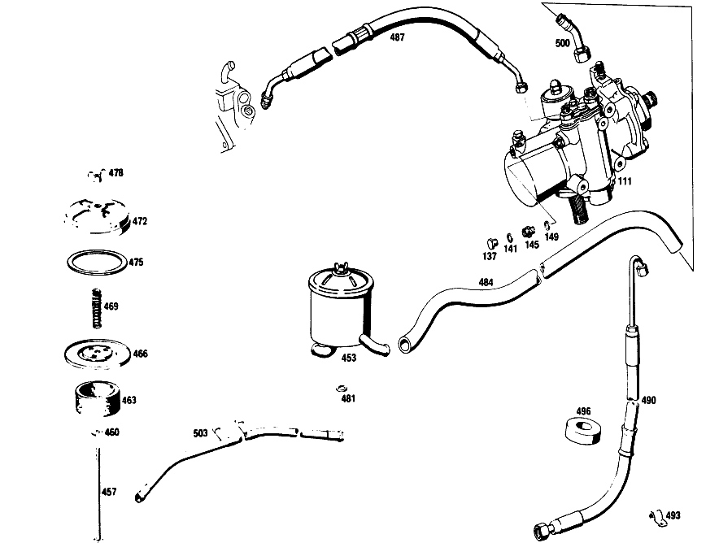

| № | Артикул | Название | Кол. | Примечание | Ограничение |
|---|---|---|---|---|---|
| 111 | A 112 460 25 01 | РУЛЕВОЕ УПРАВЛЕНИЕ | 1 | Рулевое управление: Влево | |
| 115 | A 112 460 12 02 | - КОРПУС | - | Рулевое управление: Влево | |
| 115 | A 109 460 04 02 | - КОРПУС | 1 | Рулевое управление: Влево | |
| 119 | A 001 997 02 45 | - Уплотнительное кольцо | - | ||
| 119 | A 013 997 36 48 | - УПЛОТНИТ. КОЛЬЦО | 2 | ||
| 121 | A 000 981 82 10 | - Игольчатый подшипник | 1 | ||
| 124 | A 001 997 25 45 | - Уплотнительное кольцо | 5 | ||
| 127 | A 112 997 00 30 | - Резьбовая пробка | 1 | ||
| 132 | A 000 997 87 20 | - Уплотнительное кольцо | 1 | ||
| 137 | N 007604 010102 | - Резьбовая пробка | - | ||
| 137 | N 007604 010108 | - Резьбовая пробка | 1 | [402] БОЛЬШЕ НЕ ПОСТАВЛЯЕТСЯ | |
| 141 | N 007603 010404 | - Уплотнительное кольцо | 1 | ||
| 145 | N 915013 004002 | - Штуцер | 1 | ||
| 149 | N 007603 010100 | - Уплотнительное кольцо | 1 | 10X13.5 AL | |
| 153 | A 112 460 28 85 | - ПОРШЕНЬ | 1 | Рулевое управление: Влево | |
| 157 | A 112 460 20 14 | - КРЫШКА | 1 | Рулевое управление: Влево | |
| 160 | A 001 997 26 45 | - УПЛОТНИТ. КОЛЬЦО | - | ||
| 160 | A 014 997 61 48 | - Уплотнительное кольцо | 1 | ||
| 163 | A 112 460 00 61 | - Уплотнительное кольцо | 1 | ||
| 167 | A 112 462 01 62 | - ШАЙБА УПОРНАЯ | 1 | ||
| 171 | A 000 994 26 41 | - ПРЕДОХРАНИТЕЛЬ | 1 | ||
| 175 | A 112 461 01 62 | - ШАЙБА УПОРНАЯ | 1 | ||
| 179 | A 000 981 04 18 | - ПОДШИПНИК РОЛИКОВЫЙ | 2 | ||
| 183 | A 000 981 63 10 | - Игольчатый подшипник | 1 | ||
| 186 | A 112 460 03 86 | - РЕЗЬБ. ПАТРОН | 1 | ||
| 188 | A 000 997 97 45 | - Уплотнительное кольцо | 1 | ||
| 190 | A 005 997 58 46 | - Уплотнительное кольцо | 1 | ||
| 191 | A 001 997 40 40 | - Уплотнительное кольцо | 1 | ||
| 193 | A 000 994 26 41 | - ПРЕДОХРАНИТЕЛЬ | 1 | ||
| 197 | A 120 990 05 51 | - Двенадцатигранная гайка | 1 | ||
| 202 | A 112 995 00 20 | - ХОМУТ | 1 | ||
| 206 | A 120 990 05 20 | - болт | 1 | ||
| 212 | A 112 994 00 05 | - Стопорная шайба | 1 | ||
| 217 | A 112 460 15 85 | - ПОРШЕНЬ | 1 | Рулевое управление: Влево | |
| 222 | A 000 981 39 27 | - РАД.-УПОРН. ПОДШИПНИК | 1 | ||
| 226 | A 112 466 01 73 | - Стопорное кольцо | 1 | ||
| 231 | A 000 981 40 27 | - РАД.-УПОРН. ПОДШИПНИК | 1 | ||
| 235 | A 112 466 19 05 | - КРЫШКА | 1 | ||
| 239 | A 112 466 01 34 | - КОЛЬЦО РЕЗЬБОВОЕ | 1 | ||
| 241 | A 112 466 01 60 | - Уплотнительное кольцо | 1 | ||
| 244 | A 004 997 44 45 | - Уплотнительное кольцо | 1 | ||
| 247 | A 112 993 95 01 | - пружина | 2 | ||
| 251 | A 112 466 04 62 | - ШАЙБА УПОРНАЯ | 2 | ПО НЕОБХОДИМОСТИ 1.0 MM [402] БОЛЬШЕ НЕ ПОСТАВЛЯЕТСЯ | |
| 257 | A 000 994 38 41 | - ПРЕДОХРАНИТЕЛЬ | 2 | ||
| 262 | A 112 991 01 41 | - ШТИФТ | 2 | ||
| 267 | A 112 466 02 75 | - ШАЙБА | 2 | ||
| 272 | A 112 993 19 02 | - ПРУЖИНА | 1 | ||
| 277 | A 000 994 54 41 | - ПРЕДОХРАНИТЕЛЬ | 1 | ||
| 282 | N 000933 010105 | - Винт | 4 | ||
| 288 | N 912004 010102 | - Пружинное кольцо | 4 | ||
| 293 | A 000 420 08 55 | - Клапан выпуска воздуха | 1 | ||
| 297 | A 000 421 71 87 | - КОЛПАЧОК | - | ||
| 297 | A 000 421 08 87 | - Защитный колпачок | 1 | ||
| 303 | A 112 466 11 05 | - КРЫШКА | 1 | ||
| 308 | A 112 466 12 05 | - КРЫШКА | 1 | СВЕРХУ Рулевое управление: Влево | |
| 312 | A 112 997 17 72 | - Штуцер | 1 | ||
| 317 | N 007603 014100 | - Уплотнительное кольцо | 1 | 14X18\-AL | |
| 320 | A 112 466 03 80 | - уплотнение | 1 | ||
| 322 | A 112 997 21 72 | - ШТУЦЕР | 1 | ||
| 368 | A 112 460 05 11 | - ВАЛ РУЛЕВОЙ | 1 | ||
| 372 | A 111 462 04 71 | - Палец | 1 | ||
| 376 | A 111 993 21 01 | - ПРУЖИНА | 1 | ||
| 381 | A 111 462 04 85 | - УПОР ПРИЖИМНОЙ | 1 | ||
| 386 | A 111 461 04 62 | - ШАЙБА УПОРНАЯ | 1 | ||
| 391 | A 004 994 92 41 | - предохранитель | 1 | ||
| 396 | A 109 460 02 15 | - КРЫШКА | 1 | Рулевое управление: Влево | |
| 401 | A 000 981 81 10 | - Игольчатый подшипник | 1 | ||
| 403 | A 005 997 59 46 | - Уплотнительное кольцо | 1 | ||
| 404 | A 001 997 39 40 | - Уплотнительное кольцо | 1 | ||
| 406 | A 000 994 53 41 | - Стопорное кольцо | 2 | ||
| 408 | A 002 997 47 45 | - Уплотнительное кольцо | 1 | ||
| 411 | A 112 993 97 01 | - пружина | 1 | ||
| 416 | N 000912 008096 | - Винт | - | ||
| 416 | N 000912 008202 | - Цилиндрич. винт | 6 | M8X25 | |
| 421 | N 000137 008204 | - Пружинная шайба | - | ||
| 421 | N 000137 008212 | - Пружинная шайба | 6 | ||
| 430 | A 112 466 01 72 | - ГАЙКА | 1 | ||
| 433 | A 001 997 01 45 | - Уплотнительное кольцо | 1 | ||
| 435 | N 007603 010100 | - Уплотнительное кольцо | 2 | 10X13.5 AL | |
| 441 | A 108 990 00 51 | - ГАЙКА | 1 | ||
| 445 | N 001587 010000 | - ГЛУХАЯ ГАЙКА | 1 | ||
| 447 | A 009 997 72 45 | - Уплотнительное кольцо | 2 | ||
| 449 | A 109 460 02 61 | набор уплотнений | 1 | ||
| 453 | A 189 460 03 83 | Масляный бак | 1 | Рулевое управление: Влево | |
| 457 | A 000 990 41 33 | - БОЛТ | - | ||
| 457 | N 000931 006172 | - Винт | 1 | ||
| 460 | A 000 466 03 73 | - Стопорная шайба | 1 | ||
| 463 | A 000 236 00 55 | - Фильтр | 1 | ||
| 466 | A 000 236 00 76 | - Крышка | 1 | ||
| 469 | A 001 993 14 01 | - пружина | 1 | ||
| 472 | A 000 460 11 82 | - Крышка корпуса | 1 | ||
| 475 | A 000 236 00 80 | - Уплотнительная прокладка | 1 | ||
| 478 | N 000315 006000 | - ГАЙКА | 1 | ||
| 481 | A 110 987 05 41 | Кольцо | 1 | ||
| 484 | A 006 997 09 82 | Шланг | NB | ЗАКАЗЫВАТЬ ПОГОННЫМИ МЕТРАМИ | |
| 487 | A 109 997 08 82 | Шланг | 1 | Рулевое управление: Влево | |
| 490 | A 005 997 12 82 | ШЛАНГ | 1 | Рулевое управление: Вправо | |
| 496 | A 112 466 02 82 | КОЛЬЦО РЕЗИНОВОЕ | 1 | Рулевое управление: Вправо | |
| 500 | A 112 460 10 24 | Разветвитель трубы | 1 | Рулевое управление: Влево | |
| 503 | A 109 460 00 24 | ПРОВОД | 1 | Рулевое управление: Вправо | |
| 510 | N 000937 022000 | Гайка | 1 | ||
| 514 | A 309 460 02 10 | Муфта рулевого вала | 1 | [004] 012 UP TO CHASSIS 058443 EXCEPT FOR, SEE GROUP 26, FOOTNOTE 23; 014 UP TO CHASSIS 045293 EXCEPT FOR, SEE GROUP 26, FOOTNOTE 24; 015 UP TO CHASSIS 002589 | |
| 518 | A 111 462 01 65 | - втулка | 2 | ||
| 522 | A 111 990 30 40 | - ШАЙБА | 2 | ||
| 526 | N 912002 010001 | - Механический фиксатор | 2 | ||
| 529 | A 136 990 95 40 | - ШАЙБА | 2 | ||
| 533 | A 111 990 04 20 | БОЛТ | 2 | ||
| 536 | N 912006 008000 | Пружинное кольцо | 2 | ||
| 539 | N 000931 010253 | Винт | 3 | STEERING TO FRAME FLOOR UNIT [402] БОЛЬШЕ НЕ ПОСТАВЛЯЕТСЯ | |
| 542 | N 912004 010102 | Пружинное кольцо | 3 | STEERING TO FRAME FLOOR UNIT | |
| 544 | A 108 460 04 16 | ТРУБЧАТ. СЕКЦИЯ РУЛ. КОЛ. | 1 | Рулевое управление: Влево [004] 012 UP TO CHASSIS 058443 EXCEPT FOR, SEE GROUP 26, FOOTNOTE 23; 014 UP TO CHASSIS 045293 EXCEPT FOR, SEE GROUP 26, FOOTNOTE 24; 015 UP TO CHASSIS 002589 | |
| 547 | A 108 460 48 16 | ТРУБЧАТ. СЕКЦИЯ РУЛ. КОЛ. | 1 | Рулевое управление: Влево [005] 012 FROM CHASSIS 058444 ALSO INSTALLED ON, SEE GROUP 26, FOOTNOTE 23; 014 FROM CHASSIS 045294 ALSO INSTALLED ON, SEE GROUP 26 FOOTNOTE 24; 015 FROM CHASSIS 002590 | |
| 552 | A 116 462 00 96 | Манжета | 1 | [004] 012 UP TO CHASSIS 058443 EXCEPT FOR, SEE GROUP 26, FOOTNOTE 23; 014 UP TO CHASSIS 045293 EXCEPT FOR, SEE GROUP 26, FOOTNOTE 24; 015 UP TO CHASSIS 002589 | |
| 556 | A 115 462 18 35 | Корпус подшипника | 1 | [005] 012 FROM CHASSIS 058444 ALSO INSTALLED ON, SEE GROUP 26, FOOTNOTE 23; 014 FROM CHASSIS 045294 ALSO INSTALLED ON, SEE GROUP 26 FOOTNOTE 24; 015 FROM CHASSIS 002590 | |
| 560 | A 000 981 89 10 | ПОДШИПНИК ИГОЛЬЧАТЫЙ | - | ||
| 560 | A 018 981 61 10 | Игольчатый подшипник | 1 | [005] 012 FROM CHASSIS 058444 ALSO INSTALLED ON, SEE GROUP 26, FOOTNOTE 23; 014 FROM CHASSIS 045294 ALSO INSTALLED ON, SEE GROUP 26 FOOTNOTE 24; 015 FROM CHASSIS 002590 | |
| 564 | A 108 460 04 09 | ВАЛ РУЛЕВОЙ | 1 | Рулевое управление: Влево [004] 012 UP TO CHASSIS 058443 EXCEPT FOR, SEE GROUP 26, FOOTNOTE 23; 014 UP TO CHASSIS 045293 EXCEPT FOR, SEE GROUP 26, FOOTNOTE 24; 015 UP TO CHASSIS 002589 | |
| 568 | A 108 460 26 09 | ВАЛ РУЛЕВОЙ | 1 | [005] 012 FROM CHASSIS 058444 ALSO INSTALLED ON, SEE GROUP 26, FOOTNOTE 23; 014 FROM CHASSIS 045294 ALSO INSTALLED ON, SEE GROUP 26 FOOTNOTE 24; 015 FROM CHASSIS 002590 | |
| 571 | A 116 462 00 60 | - Уплотнительное кольцо | 1 | [005] 012 FROM CHASSIS 058444 ALSO INSTALLED ON, SEE GROUP 26, FOOTNOTE 23; 014 FROM CHASSIS 045294 ALSO INSTALLED ON, SEE GROUP 26 FOOTNOTE 24; 015 FROM CHASSIS 002590 | |
| 574 | N 000625 006004 | Шарикоподшипник | 1 | ||
| 577 | A 094 990 60 05 | Стопорное кольцо | 1 | ||
| 581 | A 111 462 06 28 | Опорная пластина | 1 | [004] 012 UP TO CHASSIS 058443 EXCEPT FOR, SEE GROUP 26, FOOTNOTE 23; 014 UP TO CHASSIS 045293 EXCEPT FOR, SEE GROUP 26, FOOTNOTE 24; 015 UP TO CHASSIS 002589 | |
| 585 | N 000912 006014 | Цилиндрич. винт | 2 | [004] 012 UP TO CHASSIS 058443 EXCEPT FOR, SEE GROUP 26, FOOTNOTE 23; 014 UP TO CHASSIS 045293 EXCEPT FOR, SEE GROUP 26, FOOTNOTE 24; 015 UP TO CHASSIS 002589 | |
| 588 | N 000137 006100 | Пружинная шайба | - | ||
| 588 | N 000137 006204 | Пружинная шайба | 2 | [004] 012 UP TO CHASSIS 058443 EXCEPT FOR, SEE GROUP 26, FOOTNOTE 23; 014 UP TO CHASSIS 045293 EXCEPT FOR, SEE GROUP 26, FOOTNOTE 24; 015 UP TO CHASSIS 002589 | |
| 591 | A 094 990 70 05 | Стопорное кольцо | 1 | ||
| 594 | A 001 545 85 24 | Переключатель | 1 | Рулевое управление: Влево [004] 012 UP TO CHASSIS 058443 EXCEPT FOR, SEE GROUP 26, FOOTNOTE 23; 014 UP TO CHASSIS 045293 EXCEPT FOR, SEE GROUP 26, FOOTNOTE 24; 015 UP TO CHASSIS 002589 | |
| 597 | A 003 545 79 24 | Переключатель | 1 | Рулевое управление: Влево [005] 012 FROM CHASSIS 058444 ALSO INSTALLED ON, SEE GROUP 26, FOOTNOTE 23; 014 FROM CHASSIS 045294 ALSO INSTALLED ON, SEE GROUP 26 FOOTNOTE 24; 015 FROM CHASSIS 002590 | |
| 602 | A 003 545 37 28 | - ШТЕКЕР | - | ||
| 602 | A 012 545 03 28 | - КОРПУС ШТЕКЕРА | - | ||
| 602 | A 009 545 56 28 | - Корпус штекера | 1 | [005] 012 FROM CHASSIS 058444 ALSO INSTALLED ON, SEE GROUP 26, FOOTNOTE 23; 014 FROM CHASSIS 045294 ALSO INSTALLED ON, SEE GROUP 26 FOOTNOTE 24; 015 FROM CHASSIS 002590 | |
| 605 | A 107 464 01 43 | Угольная щетка | 1 | [005] 012 FROM CHASSIS 058444 ALSO INSTALLED ON, SEE GROUP 26, FOOTNOTE 23; 014 FROM CHASSIS 045294 ALSO INSTALLED ON, SEE GROUP 26 FOOTNOTE 24; 015 FROM CHASSIS 002590 | |
| 608 | A 108 462 01 96 | МАНЖЕТА | 1 | [004] 012 UP TO CHASSIS 058443 EXCEPT FOR, SEE GROUP 26, FOOTNOTE 23; 014 UP TO CHASSIS 045293 EXCEPT FOR, SEE GROUP 26, FOOTNOTE 24; 015 UP TO CHASSIS 002589 | |
| 611 | A 115 462 13 96 | Манжета | 1 | [005] 012 FROM CHASSIS 058444 ALSO INSTALLED ON, SEE GROUP 26, FOOTNOTE 23; 014 FROM CHASSIS 045294 ALSO INSTALLED ON, SEE GROUP 26 FOOTNOTE 24; 015 FROM CHASSIS 002590 | |
| 616 | A 000 464 09 28 | КОЛЕСО КОНТАКТНОЕ | 1 | ||
| 620 | A 000 981 10 18 | ПОДШИПНИК РОЛИКОВЫЙ | 1 | [004] 012 UP TO CHASSIS 058443 EXCEPT FOR, SEE GROUP 26, FOOTNOTE 23; 014 UP TO CHASSIS 045293 EXCEPT FOR, SEE GROUP 26, FOOTNOTE 24; 015 UP TO CHASSIS 002589 | |
| 624 | A 115 460 08 97 | ЗАЩИТНАЯ ВТУЛКА | - | ||
| 628 | A 115 464 00 17 | Контактное кольцо | 1 | [005] 012 FROM CHASSIS 058444 ALSO INSTALLED ON, SEE GROUP 26, FOOTNOTE 23; 014 FROM CHASSIS 045294 ALSO INSTALLED ON, SEE GROUP 26 FOOTNOTE 24; 015 FROM CHASSIS 002590 | |
| 632 | N 900055 032200 | Стопорное кольцо | 1 | [005] 012 FROM CHASSIS 058444 ALSO INSTALLED ON, SEE GROUP 26, FOOTNOTE 23; 014 FROM CHASSIS 045294 ALSO INSTALLED ON, SEE GROUP 26 FOOTNOTE 24; 015 FROM CHASSIS 002590 | |
| 636 | A 116 462 00 96 | Манжета | 1 | [005] 012 FROM CHASSIS 058444 ALSO INSTALLED ON, SEE GROUP 26, FOOTNOTE 23; 014 FROM CHASSIS 045294 ALSO INSTALLED ON, SEE GROUP 26 FOOTNOTE 24; 015 FROM CHASSIS 002590 | |
| 638 | A 112 460 02 03 | Рулевое колесо | 1 | [004] 012 UP TO CHASSIS 058443 EXCEPT FOR, SEE GROUP 26, FOOTNOTE 23; 014 UP TO CHASSIS 045293 EXCEPT FOR, SEE GROUP 26, FOOTNOTE 24; 015 UP TO CHASSIS 002589 | |
| 638 | A 115 464 02 01 | Рулевое колесо | 1 | ||
| 642 | A 116 460 00 03 | Рулевое колесо | 1 | [005] 012 FROM CHASSIS 058444 ALSO INSTALLED ON, SEE GROUP 26, FOOTNOTE 23; 014 FROM CHASSIS 045294 ALSO INSTALLED ON, SEE GROUP 26 FOOTNOTE 24; 015 FROM CHASSIS 002590 | |
| 646 | A 111 464 12 36 | - СТУПИЦА | 1 | [004] 012 UP TO CHASSIS 058443 EXCEPT FOR, SEE GROUP 26, FOOTNOTE 23; 014 UP TO CHASSIS 045293 EXCEPT FOR, SEE GROUP 26, FOOTNOTE 24; 015 UP TO CHASSIS 002589 | |
| 651 | A 100 464 01 15 | - КОЛЬЦО СИГНАЛЬНОЕ | 1 | [004] 012 UP TO CHASSIS 058443 EXCEPT FOR, SEE GROUP 26, FOOTNOTE 23; 014 UP TO CHASSIS 045293 EXCEPT FOR, SEE GROUP 26, FOOTNOTE 24; 015 UP TO CHASSIS 002589 | |
| 655 | A 111 464 00 73 | - ПРЕДОХРАНИТЕЛЬ | 2 | [417] БОЛЬШЕ НЕ ПОСТАВЛЯЕТСЯ, ЗАКАЗЫВАТЬ КОМПЛЕКТ ПОСТАВКИ [004] 012 UP TO CHASSIS 058443 EXCEPT FOR, SEE GROUP 26, FOOTNOTE 23; 014 UP TO CHASSIS 045293 EXCEPT FOR, SEE GROUP 26, FOOTNOTE 24; 015 UP TO CHASSIS 002589 | |
| 659 | A 111 464 01 72 | - гайка | 2 | [004] 012 UP TO CHASSIS 058443 EXCEPT FOR, SEE GROUP 26, FOOTNOTE 23; 014 UP TO CHASSIS 045293 EXCEPT FOR, SEE GROUP 26, FOOTNOTE 24; 015 UP TO CHASSIS 002589 | |
| 664 | A 111 464 00 24 | - втулка | 3 | [004] 012 UP TO CHASSIS 058443 EXCEPT FOR, SEE GROUP 26, FOOTNOTE 23; 014 UP TO CHASSIS 045293 EXCEPT FOR, SEE GROUP 26, FOOTNOTE 24; 015 UP TO CHASSIS 002589 | |
| 667 | A 115 464 04 15 | Сигнальное кольцо | 1 | [005] 012 FROM CHASSIS 058444 ALSO INSTALLED ON, SEE GROUP 26, FOOTNOTE 23; 014 FROM CHASSIS 045294 ALSO INSTALLED ON, SEE GROUP 26 FOOTNOTE 24; 015 FROM CHASSIS 002590 | |
| 674 | A 115 464 01 34 | Держатель | 1 | [005] 012 FROM CHASSIS 058444 ALSO INSTALLED ON, SEE GROUP 26, FOOTNOTE 23; 014 FROM CHASSIS 045294 ALSO INSTALLED ON, SEE GROUP 26 FOOTNOTE 24; 015 FROM CHASSIS 002590 | |
| 677 | N 007987 003122 | БОЛТ | 3 | [005] 012 FROM CHASSIS 058444 ALSO INSTALLED ON, SEE GROUP 26, FOOTNOTE 23; 014 FROM CHASSIS 045294 ALSO INSTALLED ON, SEE GROUP 26 FOOTNOTE 24; 015 FROM CHASSIS 002590 | |
| 683 | N 000137 008204 | Пружинная шайба | - | ||
| 683 | N 000137 008212 | Пружинная шайба | 5 | STEERING WHEEL TO COLLAPSIBLE COLLAR [005] 012 FROM CHASSIS 058444 ALSO INSTALLED ON, SEE GROUP 26, FOOTNOTE 23; 014 FROM CHASSIS 045294 ALSO INSTALLED ON, SEE GROUP 26 FOOTNOTE 24; 015 FROM CHASSIS 002590 | |
| 686 | N 000934 008013 | Гайка | 5 | STEERING WHEEL TO COLLAPSIBLE COLLAR [005] 012 FROM CHASSIS 058444 ALSO INSTALLED ON, SEE GROUP 26, FOOTNOTE 23; 014 FROM CHASSIS 045294 ALSO INSTALLED ON, SEE GROUP 26 FOOTNOTE 24; 015 FROM CHASSIS 002590 | |
| 691 | N 912004 014100 | Пружинное кольцо | 1 | ||
| 694 | N 000936 014010 | Гайка | - | ||
| 694 | N 308675 014000 | Шестигранная гайка | - | ||
| 694 | N 308675 014002 | Шестигранная гайка | 1 | M14X1.5\-05 | |
| 697 | A 111 460 06 42 | ПЛАСТИНА НАКЛАДНАЯ | 1 | [004] 012 UP TO CHASSIS 058443 EXCEPT FOR, SEE GROUP 26, FOOTNOTE 23; 014 UP TO CHASSIS 045293 EXCEPT FOR, SEE GROUP 26, FOOTNOTE 24; 015 UP TO CHASSIS 002589 | |
| 701 | A 115 464 03 42 | Набивка | 1 | [005] 012 FROM CHASSIS 058444 ALSO INSTALLED ON, SEE GROUP 26, FOOTNOTE 23; 014 FROM CHASSIS 045294 ALSO INSTALLED ON, SEE GROUP 26 FOOTNOTE 24; 015 FROM CHASSIS 002590 | |
| 705 | A 000 462 24 30 | ЗАМОК РУЛЕВОГО УПРАВЛЕНИЯ | 1 | Рулевое управление: Влево [004] 012 UP TO CHASSIS 058443 EXCEPT FOR, SEE GROUP 26, FOOTNOTE 23; 014 UP TO CHASSIS 045293 EXCEPT FOR, SEE GROUP 26, FOOTNOTE 24; 015 UP TO CHASSIS 002589 | |
| 708 | A 000 462 49 30 | ЗАМОК РУЛЕВОГО УПРАВЛЕНИЯ | 1 | Рулевое управление: Влево [005] 012 FROM CHASSIS 058444 ALSO INSTALLED ON, SEE GROUP 26, FOOTNOTE 23; 014 FROM CHASSIS 045294 ALSO INSTALLED ON, SEE GROUP 26 FOOTNOTE 24; 015 FROM CHASSIS 002590 | |
| 714 | A 000 462 06 93 | - Переключатель | 1 | [004] 012 UP TO CHASSIS 058443 EXCEPT FOR, SEE GROUP 26, FOOTNOTE 23; 014 UP TO CHASSIS 045293 EXCEPT FOR, SEE GROUP 26, FOOTNOTE 24; 015 UP TO CHASSIS 002589 | |
| 717 | A 116 462 00 93 | - Переключатель | 1 | [005] 012 FROM CHASSIS 058444 ALSO INSTALLED ON, SEE GROUP 26, FOOTNOTE 23; 014 FROM CHASSIS 045294 ALSO INSTALLED ON, SEE GROUP 26 FOOTNOTE 24; 015 FROM CHASSIS 002590 | |
| 720 | A 000 462 09 23 | - Крышка | 1 | [005] 012 FROM CHASSIS 058444 ALSO INSTALLED ON, SEE GROUP 26, FOOTNOTE 23; 014 FROM CHASSIS 045294 ALSO INSTALLED ON, SEE GROUP 26 FOOTNOTE 24; 015 FROM CHASSIS 002590 | |
| 724 | A 000 462 48 30 | - Замковый цилиндр | 1 | ПРИ ЗАКАЗЕ УКАЗАТЬ НОМЕР КОМПЛЕКТА ЗАМКОВ [005] 012 FROM CHASSIS 058444 ALSO INSTALLED ON, SEE GROUP 26, FOOTNOTE 23; 014 FROM CHASSIS 045294 ALSO INSTALLED ON, SEE GROUP 26 FOOTNOTE 24; 015 FROM CHASSIS 002590 | |
| 731 | N 000933 008145 | Винт | 1 | M8 X 18 [004] 012 UP TO CHASSIS 058443 EXCEPT FOR, SEE GROUP 26, FOOTNOTE 23; 014 UP TO CHASSIS 045293 EXCEPT FOR, SEE GROUP 26, FOOTNOTE 24; 015 UP TO CHASSIS 002589 | |
| 734 | N 000931 008244 | Винт | 1 | [004] 012 UP TO CHASSIS 058443 EXCEPT FOR, SEE GROUP 26, FOOTNOTE 23; 014 UP TO CHASSIS 045293 EXCEPT FOR, SEE GROUP 26, FOOTNOTE 24; 015 UP TO CHASSIS 002589 | |
| 737 | N 000127 008200 | КОЛЬЦО ПРУЖИННОЕ | 2 | [004] 012 UP TO CHASSIS 058443 EXCEPT FOR, SEE GROUP 26, FOOTNOTE 23; 014 UP TO CHASSIS 045293 EXCEPT FOR, SEE GROUP 26, FOOTNOTE 24; 015 UP TO CHASSIS 002589 | |
| 740 | N 000125 008407 | ШАЙБА | 2 | [004] 012 UP TO CHASSIS 058443 EXCEPT FOR, SEE GROUP 26, FOOTNOTE 23; 014 UP TO CHASSIS 045293 EXCEPT FOR, SEE GROUP 26, FOOTNOTE 24; 015 UP TO CHASSIS 002589 | |
| 743 | A 002 990 77 01 | БОЛТ | 1 | [005] 012 FROM CHASSIS 058444 ALSO INSTALLED ON, SEE GROUP 26, FOOTNOTE 23; 014 FROM CHASSIS 045294 ALSO INSTALLED ON, SEE GROUP 26 FOOTNOTE 24; 015 FROM CHASSIS 002590 | |
| 747 | N 000931 008046 | Винт | - | ||
| 747 | N 304017 008018 | Винт с 6-гранной головкой | 1 | M8X35 [005] 012 FROM CHASSIS 058444 ALSO INSTALLED ON, SEE GROUP 26, FOOTNOTE 23; 014 FROM CHASSIS 045294 ALSO INSTALLED ON, SEE GROUP 26 FOOTNOTE 24; 015 FROM CHASSIS 002590 | |
| 751 | N 000127 008203 | Пружинное кольцо | 2 | [005] 012 FROM CHASSIS 058444 ALSO INSTALLED ON, SEE GROUP 26, FOOTNOTE 23; 014 FROM CHASSIS 045294 ALSO INSTALLED ON, SEE GROUP 26 FOOTNOTE 24; 015 FROM CHASSIS 002590 | |
| 753 | N 009021 008205 | Шайба | - | ||
| 753 | N 009021 008213 | Шайба | 2 | 8 MM | |
| 753 | N 000000 003250 | Шайба | 2 | [005] 012 FROM CHASSIS 058444 ALSO INSTALLED ON, SEE GROUP 26, FOOTNOTE 23; 014 FROM CHASSIS 045294 ALSO INSTALLED ON, SEE GROUP 26 FOOTNOTE 24; 015 FROM CHASSIS 002590 | |
| 756 | A 108 462 00 95 | ПАНЕЛЬ | 1 | Рулевое управление: Влево | |
| 761 | A 111 462 08 80 | ПРОКЛАДКА УПЛОТНИТЕЛЬНАЯ | 1 | ||
| 765 | A 111 462 13 80 | Уплотнительная прокладка | 1 | Рулевое управление: Влево | |
| 768 | N 914007 006004 | Винт с неспадающей шайбой | 6 | Рулевое управление: Влево | |
| 768 | N 914007 006004 | Винт с неспадающей шайбой | 5 | Рулевое управление: Вправо | |
| 772 | A 000 990 27 91 | ГАЙКОДЕРЖАТЕЛЬ | - | Рулевое управление: Влево | |
| 772 | A 000 990 22 91 | ГАЙКОДЕРЖАТЕЛЬ | - | Рулевое управление: Влево | |
| 772 | A 001 990 67 91 | Гайкодержатель | 6 | Рулевое управление: Влево | |
| 772 | A 001 990 67 91 | Гайкодержатель | 5 | Рулевое управление: Вправо | |
| 776 | A 111 460 07 65 | ЛЕНТА НАТЯЖНАЯ | 1 | [004] 012 UP TO CHASSIS 058443 EXCEPT FOR, SEE GROUP 26, FOOTNOTE 23; 014 UP TO CHASSIS 045293 EXCEPT FOR, SEE GROUP 26, FOOTNOTE 24; 015 UP TO CHASSIS 002589 | |
| 781 | N 000125 008407 | ШАЙБА | 2 | [004] 012 UP TO CHASSIS 058443 EXCEPT FOR, SEE GROUP 26, FOOTNOTE 23; 014 UP TO CHASSIS 045293 EXCEPT FOR, SEE GROUP 26, FOOTNOTE 24; 015 UP TO CHASSIS 002589 | |
| 785 | N 000985 008001 | ГАЙКА | 2 | [004] 012 UP TO CHASSIS 058443 EXCEPT FOR, SEE GROUP 26, FOOTNOTE 23; 014 UP TO CHASSIS 045293 EXCEPT FOR, SEE GROUP 26, FOOTNOTE 24; 015 UP TO CHASSIS 002589 | |
| 792 | A 000 330 04 85 | Ремк-т шарового шарнира | 1 | ТЯГА РУЛЕВАЯ | |
| 796 | A 111 460 13 19 | Промежуточный рычаг | 1 | Рулевое управление: Влево | |
| 800 | A 111 463 00 60 | Уплотнительное кольцо | 1 | ||
| 804 | A 111 463 01 33 | Запорная крышка | 1 | ||
| 807 | A 111 993 04 01 | Нажимная пружина | 1 | ||
| 811 | A 111 463 00 62 | Прижимная шайба | 1 | ||
| 814 | A 181 994 00 10 | Стопорная шайба | 1 | ||
| 817 | N 071412 008102 | Пресс-масленка | 1 | ||
| 820 | A 111 463 00 90 | ЗАЩИТНАЯ ПАНЕЛЬ | 1 | ||
| 824 | A 111 463 11 40 | Держатель | 1 | Рулевое управление: Влево | |
| 829 | A 120 990 01 55 | гайка | 4 | ||
| 834 | A 111 460 00 50 | ремкомплект | 1 | ||
| 838 | A 000 463 51 32 | Амортизатор | 1 | (ДЕМПФЕР РУЛ. УПРАВЛ.) | |
| 843 | N 000960 010026 | Винт | - | ||
| 843 | N 000961 010031 | Винт | 1 | ||
| 846 | N 912004 010102 | Пружинное кольцо | 1 | ||
| A 111 460 46 01 | РУЛЕВОЕ УПРАВЛЕНИЕ | - | Рулевое управление: Вправо | ||
| A 109 460 11 01 | Рулевой механизм | 1 | Рулевое управление: Вправо [697] ДЕТАЛЬ ПОСТАВЛЯЕТСЯ ТОЛЬКО/ИЛИ ТАКЖЕ КАК ЗАП.ЧАСТЬ | ||
| A 112 460 13 02 | - КОРПУС | - | Рулевое управление: Вправо | ||
| A 109 460 08 02 | - КОРПУС | - | Рулевое управление: Вправо | ||
| A 109 460 11 01 | - Рулевой механизм | 1 | Рулевое управление: Вправо | ||
| N 900083 013500 | - Пробка | 1 | |||
| A 112 460 29 85 | - ПОРШЕНЬ | 1 | Рулевое управление: Вправо | ||
| A 112 460 21 14 | - КРЫШКА | 1 | Рулевое управление: Вправо | ||
| A 000 981 08 18 | - ПОДШИПНИК РОЛИКОВЫЙ | - | [402] БОЛЬШЕ НЕ ПОСТАВЛЯЕТСЯ | ||
| A 108 995 04 20 | - ХОМУТ | 1 | |||
| A 112 460 16 85 | - ПОРШЕНЬ | 1 | Рулевое управление: Вправо | ||
| A 112 466 05 62 | - ШАЙБА УПОРНАЯ | 2 | ПО НЕОБХОДИМОСТИ 1.1 MM [402] БОЛЬШЕ НЕ ПОСТАВЛЯЕТСЯ | ||
| A 112 466 06 62 | - ШАЙБА УПОРНАЯ | 2 | ПО НЕОБХОДИМОСТИ 1.2 MM [402] БОЛЬШЕ НЕ ПОСТАВЛЯЕТСЯ | ||
| A 112 466 07 62 | - ШАЙБА УПОРНАЯ | 2 | ПО НЕОБХОДИМОСТИ 1.3 MM [402] БОЛЬШЕ НЕ ПОСТАВЛЯЕТСЯ | ||
| A 112 466 09 62 | - ШАЙБА УПОРНАЯ | 2 | ПО НЕОБХОДИМОСТИ 1.5mm [402] БОЛЬШЕ НЕ ПОСТАВЛЯЕТСЯ [001] WHEN REQUIRED,TO BE REWORKED TO 1.4 MM | ||
| A 112 466 10 62 | - ШАЙБА УПОРНАЯ | 2 | ПО НЕОБХОДИМОСТИ 1.6mm [402] БОЛЬШЕ НЕ ПОСТАВЛЯЕТСЯ | ||
| A 112 466 11 62 | - ШАЙБА УПОРНАЯ | 2 | ПО НЕОБХОДИМОСТИ 1.7 MM [402] БОЛЬШЕ НЕ ПОСТАВЛЯЕТСЯ | ||
| A 112 466 12 62 | - ШАЙБА УПОРНАЯ | 2 | ПО НЕОБХОДИМОСТИ 1.8mm [402] БОЛЬШЕ НЕ ПОСТАВЛЯЕТСЯ | ||
| A 112 466 13 62 | - ШАЙБА УПОРНАЯ | 2 | ПО НЕОБХОДИМОСТИ 1.9 MM [402] БОЛЬШЕ НЕ ПОСТАВЛЯЕТСЯ | ||
| A 112 466 14 62 | - Прижимная шайба | 2 | ПО НЕОБХОДИМОСТИ 2.9 MM [409] ПРИ МОНТАЖЕ ПОДОГНАТЬ ПО МЕСТУ | ||
| A 112 466 14 05 | - КРЫШКА | 1 | СВЕРХУ Рулевое управление: Вправо | ||
| A 005 997 98 45 | - Уплотнительное кольцо | 1 | |||
| A 109 460 03 15 | - КРЫШКА | 1 | Рулевое управление: Вправо | ||
| A 001 997 02 45 | - Уплотнительное кольцо | - | |||
| A 013 997 36 48 | - УПЛОТНИТ. КОЛЬЦО | 2 | |||
| A 004 997 44 45 | - Уплотнительное кольцо | 2 | |||
| N 000917 010002 | - Гайка | 1 | |||
| A 109 460 00 83 | МАСЛЯНЫЙ БАЧОК | 1 | Рулевое управление: Вправо [402] БОЛЬШЕ НЕ ПОСТАВЛЯЕТСЯ | ||
| A 189 236 01 71 | - БОЛТ | 1 | |||
| N 900288 092100 | Хомут | 1 | |||
| N 916001 020000 | ХОМУТ | 2 | |||
| A 112 460 07 24 | ПРОВОД | - | Рулевое управление: Вправо | ||
| A 112 460 10 24 | Разветвитель трубы | 1 | Рулевое управление: Вправо | ||
| A 006 997 09 82 | Шланг | NB | ЗАКАЗЫВАТЬ ПОГОННЫМИ МЕТРАМИ | ||
| A 112 466 02 82 | КОЛЬЦО РЕЗИНОВОЕ | 1 | Рулевое управление: Вправо | ||
| A 112 997 69 82 | ШЛАНГ | 1 | STEERING BOX TO IDLING ADJUSTMENT PRESSURE CYLINDER Рулевое управление: Влево | ||
| A 112 463 14 01 | РЫЧАГ НА РУЛЕВОЙ КОЛОНКЕ | 1 | Рулевое управление: Влево | ||
| A 112 463 15 01 | РЫЧАГ НА РУЛЕВОЙ КОЛОНКЕ | 1 | Рулевое управление: Вправо | ||
| N 000094 005033 | Шплинт | 1 | |||
| A 111 460 03 10 | РУЛ. УПРАВЛ.-СЦЕПЛЕНИЕ | - | |||
| A 115 460 05 10 | Муфта рулевого вала | 1 | [005] 012 FROM CHASSIS 058444 ALSO INSTALLED ON, SEE GROUP 26, FOOTNOTE 23; 014 FROM CHASSIS 045294 ALSO INSTALLED ON, SEE GROUP 26 FOOTNOTE 24; 015 FROM CHASSIS 002590 | ||
| A 108 460 05 16 | ТРУБЧАТ. СЕКЦИЯ РУЛ. КОЛ. | 1 | Рулевое управление: Вправо [004] 012 UP TO CHASSIS 058443 EXCEPT FOR, SEE GROUP 26, FOOTNOTE 23; 014 UP TO CHASSIS 045293 EXCEPT FOR, SEE GROUP 26, FOOTNOTE 24; 015 UP TO CHASSIS 002589 | ||
| A 108 460 49 16 | ТРУБЧАТ. СЕКЦИЯ РУЛ. КОЛ. | 1 | Рулевое управление: Вправо [005] 012 FROM CHASSIS 058444 ALSO INSTALLED ON, SEE GROUP 26, FOOTNOTE 23; 014 FROM CHASSIS 045294 ALSO INSTALLED ON, SEE GROUP 26 FOOTNOTE 24; 015 FROM CHASSIS 002590 | ||
| N 000912 006064 | Винт | 4 | BEARING BODY TO STEERING COLUMN JACKET TUBE [005] 012 FROM CHASSIS 058444 ALSO INSTALLED ON, SEE GROUP 26, FOOTNOTE 23; 014 FROM CHASSIS 045294 ALSO INSTALLED ON, SEE GROUP 26 FOOTNOTE 24; 015 FROM CHASSIS 002590 | ||
| N 000137 006204 | Пружинная шайба | 4 | BEARING BODY TO STEERING COLUMN JACKET TUBE [005] 012 FROM CHASSIS 058444 ALSO INSTALLED ON, SEE GROUP 26, FOOTNOTE 23; 014 FROM CHASSIS 045294 ALSO INSTALLED ON, SEE GROUP 26 FOOTNOTE 24; 015 FROM CHASSIS 002590 | ||
| A 110 460 50 09 | ВАЛ РУЛЕВОЙ | 1 | Рулевое управление: Вправо [004] 012 UP TO CHASSIS 058443 EXCEPT FOR, SEE GROUP 26, FOOTNOTE 23; 014 UP TO CHASSIS 045293 EXCEPT FOR, SEE GROUP 26, FOOTNOTE 24; 015 UP TO CHASSIS 002589 | ||
| A 002 545 11 24 | ВЫКЛЮЧАТЕЛЬ АВТОМ. | 1 | Рулевое управление: Вправо [004] 012 UP TO CHASSIS 058443 EXCEPT FOR, SEE GROUP 26, FOOTNOTE 23; 014 UP TO CHASSIS 045293 EXCEPT FOR, SEE GROUP 26, FOOTNOTE 24; 015 UP TO CHASSIS 002589 | ||
| A 002 545 98 24 | Переключатель | 1 | Рулевое управление: Вправо [005] 012 FROM CHASSIS 058444 ALSO INSTALLED ON, SEE GROUP 26, FOOTNOTE 23; 014 FROM CHASSIS 045294 ALSO INSTALLED ON, SEE GROUP 26 FOOTNOTE 24; 015 FROM CHASSIS 002590 | ||
| A 003 545 27 28 | - Штекерное соединение | 1 | [004] 012 UP TO CHASSIS 058443 EXCEPT FOR, SEE GROUP 26, FOOTNOTE 23; 014 UP TO CHASSIS 045293 EXCEPT FOR, SEE GROUP 26, FOOTNOTE 24; 015 UP TO CHASSIS 002589 | ||
| A 009 545 57 28 | - Крышка | 1 | TO 009 545 56 28 | ||
| N 914025 004103 | Винт с неспадающей шайбой | 2 | SWITCH TO BEARING BODY | ||
| A 115 462 13 96 | Манжета | 1 | [004] 012 UP TO CHASSIS 058443 EXCEPT FOR, SEE GROUP 26, FOOTNOTE 23; 014 UP TO CHASSIS 045293 EXCEPT FOR, SEE GROUP 26, FOOTNOTE 24; 015 UP TO CHASSIS 002589 | ||
| A 116 460 00 03 | Рулевое колесо | 1 | [005] 012 FROM CHASSIS 058444 ALSO INSTALLED ON, SEE GROUP 26, FOOTNOTE 23; 014 FROM CHASSIS 045294 ALSO INSTALLED ON, SEE GROUP 26 FOOTNOTE 24; 015 FROM CHASSIS 002590 | ||
| A 116 990 01 21 | - болт | 4 | TO 116460 00 03 | ||
| A 116 993 55 01 | - ПРУЖИНА | 4 | TO 116 460 00 03 | ||
| A 116 993 51 01 | - пружина | 4 | TO 116 460 00 03 | ||
| A 116 464 00 50 | - втулка | 4 | TO 116 460 00 03 | ||
| A 116 464 01 77 | - ЗАЩИТНОЕ КОЛЬЦО | - | |||
| A 601 990 05 40 | - Диск | 4 | TO 116 460 00 03 | ||
| A 116 464 00 77 | - ЗАЩИТНОЕ КОЛЬЦО | 4 | TO 116 460 00 03 | ||
| A 116 990 10 40 | - Диск | 4 | TO 116 460 00 03 | ||
| A 000 462 25 30 | ЗАМОК РУЛЕВОГО УПРАВЛЕНИЯ | 1 | Рулевое управление: Вправо [004] 012 UP TO CHASSIS 058443 EXCEPT FOR, SEE GROUP 26, FOOTNOTE 23; 014 UP TO CHASSIS 045293 EXCEPT FOR, SEE GROUP 26, FOOTNOTE 24; 015 UP TO CHASSIS 002589 | ||
| A 000 462 50 30 | ЗАМОК РУЛЕВОГО УПРАВЛЕНИЯ | 1 | Рулевое управление: Вправо [005] 012 FROM CHASSIS 058444 ALSO INSTALLED ON, SEE GROUP 26, FOOTNOTE 23; 014 FROM CHASSIS 045294 ALSO INSTALLED ON, SEE GROUP 26 FOOTNOTE 24; 015 FROM CHASSIS 002590 | ||
| N 000084 004105 | - Винт | 3 | [004] 012 UP TO CHASSIS 058443 EXCEPT FOR, SEE GROUP 26, FOOTNOTE 23; 014 UP TO CHASSIS 045293 EXCEPT FOR, SEE GROUP 26, FOOTNOTE 24; 015 UP TO CHASSIS 002589 | ||
| A 000 460 00 04 | - Замковый цилиндр | 1 | БЕЗ ОПРЕДЕЛЕН. ЗАКРЫТИЯ [034] UP TO CHASSIS: 016 090523; 018 096416; 057,058 010221 | ||
| A 000 462 03 32 | - Ключ | 1 | [402] БОЛЬШЕ НЕ ПОСТАВЛЯЕТСЯ [004] 012 UP TO CHASSIS 058443 EXCEPT FOR, SEE GROUP 26, FOOTNOTE 23; 014 UP TO CHASSIS 045293 EXCEPT FOR, SEE GROUP 26, FOOTNOTE 24; 015 UP TO CHASSIS 002589 | ||
| A 111 462 01 32 | - КЛЮЧ | 1 | [402] БОЛЬШЕ НЕ ПОСТАВЛЯЕТСЯ [004] 012 UP TO CHASSIS 058443 EXCEPT FOR, SEE GROUP 26, FOOTNOTE 23; 014 UP TO CHASSIS 045293 EXCEPT FOR, SEE GROUP 26, FOOTNOTE 24; 015 UP TO CHASSIS 002589 | ||
| N 009046 020000 | - КОЛЬЦО | 1 | [004] 012 UP TO CHASSIS 058443 EXCEPT FOR, SEE GROUP 26, FOOTNOTE 23; 014 UP TO CHASSIS 045293 EXCEPT FOR, SEE GROUP 26, FOOTNOTE 24; 015 UP TO CHASSIS 002589 | ||
| A 115 460 03 22 | хомут | 1 | ЗАМОК РУЛ. УПРАВЛ. НА ТРУБЕ РУЛ. КОЛОНКИ [005] 012 FROM CHASSIS 058444 ALSO INSTALLED ON, SEE GROUP 26, FOOTNOTE 23; 014 FROM CHASSIS 045294 ALSO INSTALLED ON, SEE GROUP 26 FOOTNOTE 24; 015 FROM CHASSIS 002590 | ||
| N 000931 006094 | Винт | 1 | ЗАМОК РУЛ. УПРАВЛ. НА ТРУБЕ РУЛ. КОЛОНКИ [005] 012 FROM CHASSIS 058444 ALSO INSTALLED ON, SEE GROUP 26, FOOTNOTE 23; 014 FROM CHASSIS 045294 ALSO INSTALLED ON, SEE GROUP 26 FOOTNOTE 24; 015 FROM CHASSIS 002590 | ||
| A 094 990 68 10 | Пружинное кольцо | 1 | ЗАМОК РУЛ. УПРАВЛ. НА ТРУБЕ РУЛ. КОЛОНКИ [005] 012 FROM CHASSIS 058444 ALSO INSTALLED ON, SEE GROUP 26, FOOTNOTE 23; 014 FROM CHASSIS 045294 ALSO INSTALLED ON, SEE GROUP 26 FOOTNOTE 24; 015 FROM CHASSIS 002590 | ||
| N 007985 004123 | Винт | 5 | MAIN CABLE HARNESS TO STEERING LOCK; M4X6 [004] 012 UP TO CHASSIS 058443 EXCEPT FOR, SEE GROUP 26, FOOTNOTE 23; 014 UP TO CHASSIS 045293 EXCEPT FOR, SEE GROUP 26, FOOTNOTE 24; 015 UP TO CHASSIS 002589 | ||
| N 000127 004203 | Пружинное кольцо | - | |||
| N 912004 004102 | Пружинное кольцо | 5 | MAIN CABLE HARNESS TO STEERING LOCK [004] 012 UP TO CHASSIS 058443 EXCEPT FOR, SEE GROUP 26, FOOTNOTE 23; 014 UP TO CHASSIS 045293 EXCEPT FOR, SEE GROUP 26, FOOTNOTE 24; 015 UP TO CHASSIS 002589 | ||
| A 108 462 01 95 | ПАНЕЛЬ | 1 | Рулевое управление: Вправо [021] 012 UP TO CHASSIS 042057; 014 UP TO CHASSIS 033579; 015 UP TO CHASSIS 002605 | ||
| A 108 462 04 95 | ПАНЕЛЬ | 1 | Рулевое управление: Вправо [022] 012 FROM CHASSIS 042058; 014 FROM CHASSIS 033580; 015 FROM CHASSIS 002606 | ||
| A 108 460 01 61 | УПЛОТНИТЕЛЬ | 1 | Рулевое управление: Вправо | ||
| A 111 462 01 75 | Диск | 6 | Рулевое управление: Влево | ||
| A 111 462 01 75 | Диск | 5 | Рулевое управление: Вправо | ||
| A 111 460 06 65 | ЛЕНТА НАТЯЖНАЯ | 2 | [004] 012 UP TO CHASSIS 058443 EXCEPT FOR, SEE GROUP 26, FOOTNOTE 23; 014 UP TO CHASSIS 045293 EXCEPT FOR, SEE GROUP 26, FOOTNOTE 24; 015 UP TO CHASSIS 002589 | ||
| A 109 460 02 05 | Рулевая тяга | 1 | |||
| A 109 460 03 05 | ТЯГА РУЛЕВАЯ | - | |||
| A 109 460 02 05 | Рулевая тяга | 1 | |||
| A 000 338 02 97 | - МАНЖЕТА | - | |||
| A 000 338 13 97 | - Эластомерная манжета | - | [023] NO LONGER AVAILABLE; IN STEAD: 114 586 01 35 REPAIR KIT | ||
| A 000 338 09 63 | - Стяжное кольцо | - | ВНИЗУ [023] NO LONGER AVAILABLE; IN STEAD: 114 586 01 35 REPAIR KIT | ||
| A 000 338 10 63 | - Стяжное кольцо | - | СВЕРХУ [023] NO LONGER AVAILABLE; IN STEAD: 114 586 01 35 REPAIR KIT | ||
| A 111 460 14 19 | РЫЧАГ ПРОМЕЖУТОЧНЫЙ | 1 | Рулевое управление: Вправо | ||
| A 120 463 02 50 | втулка | 1 | ПРОМЕЖУТОЧНЫЙ РЫЧАГ РУЛЕВОГО УПРАВЛЕНИЯ | ||
| N 000933 006102 | Винт | - | Рулевое управление: Влево | ||
| N 304017 006016 | Винт с 6-гранной головкой | 1 | M6X16 Рулевое управление: Влево | ||
| A 094 990 68 10 | Пружинное кольцо | 1 | Рулевое управление: Влево | ||
| N 000934 006013 | Гайка | - | Рулевое управление: Влево | ||
| N 304032 006008 | Шестигранная гайка | 1 | Рулевое управление: Влево | ||
| N 000094 002077 | Шплинт | 4 | |||
| A 111 463 10 56 | Пылезащитный колпачок | 1 | |||
| A 111 463 00 52 | РАСПОРНАЯ ШАЙБА | - | |||
| A 124 463 00 77 | Диск | 1 | |||
| N 000960 016287 | Винт | 1 | [402] БОЛЬШЕ НЕ ПОСТАВЛЯЕТСЯ | ||
| N 913004 016004 | Гайка | - | |||
| N 910113 016002 | Шестигранная гайка | 1 | M16 | ||
| N 000985 010005 | ГАЙКА | 1 |
Позиций: 307 · подписано на схемах: 205 · колесо — плавный зум в курсор, перетаскивание — пан, двойной клик — зум, клик по артикулу — скопировать.